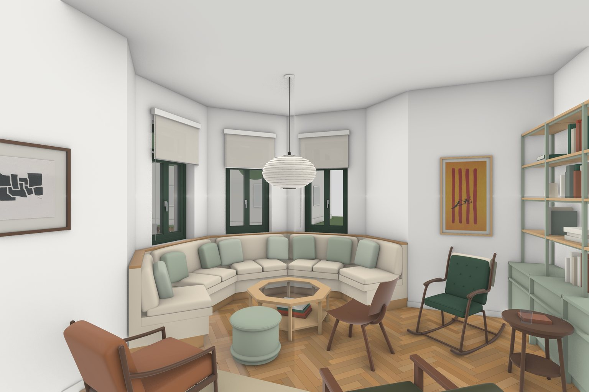
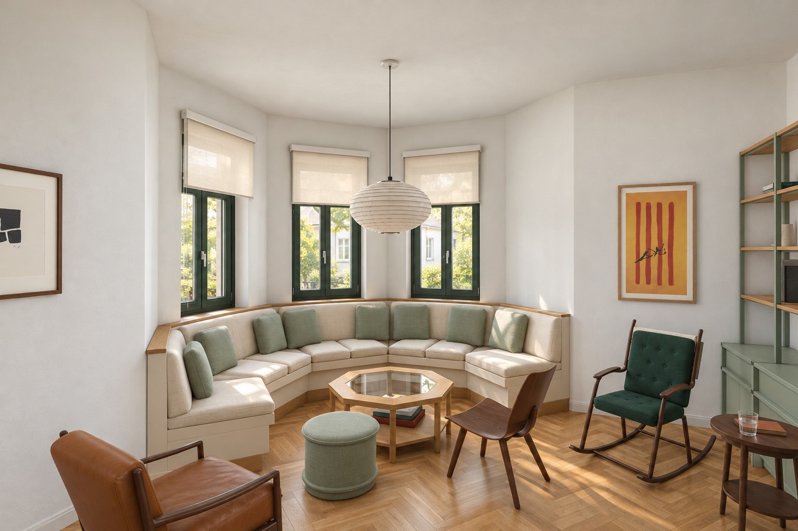

AI rendering for architects: 2026 comparison
There are now dozens of AI rendering tools for architects. They differ less in image quality than in where they run, how closely they follow your model and how they charge. This guide sorts them by what matters in practice.


Three kinds of tools
1. Plugins inside your modelling software
They capture the live viewport of Rhino, Revit, SketchUp, Archicad or similar, so the camera always matches the model. Examples: Veras (by Chaos, for Revit, SketchUp, Rhino and others), ArkoAI (plugins for several modellers) and Amphion for Rhino, which also models geometry from text before rendering. Best for design reviews where you render the same views again after every change.
2. Web apps
You upload a screenshot, sketch or photo. Examples: mnml.ai, LookX, PromeAI, MyArchitectAI and general image platforms such as Krea. They work with any software and often add sketch-to-render, virtual staging and upscaling. You export an image for every iteration.
3. Real-time renderers with AI features
Tools such as D5 Render or Enscape render physically with real light and materials and add AI for atmosphere, materials or upscaling. Slower to set up, but light and materials are fully under your control and consistent across a whole set of views or an animation.
What to compare
| Criterion | Why it matters | How to test |
|---|---|---|
| Geometry fidelity | Moved windows or extra floors make an image unusable for a client | Count openings and floors in the result |
| Camera fidelity | Views must match plans and previous renders | Overlay result and viewport at 50 % opacity |
| Consistency | A set of views should look like one building | Render three views with the same prompt |
| Resolution | Boards and prints need 3000 px and more | Check native output before upscaling |
| Pricing model | Subscriptions suit daily use, credits suit occasional use | Estimate renders per month |
| Privacy | Client projects under NDA | Read whether uploads are used for training and where data is stored |
| Platform | Some plugins are Windows only | Check Mac support and your software version |
Pricing models in 2026
- Monthly subscription with a render quota or unlimited renders: predictable for offices that render daily.
- Credits per image: no commitment, good for occasional use and freelancers. Check whether credits expire.
- Bring your own key: some tools let you connect your own OpenAI or Anthropic account and charge only a small fee on top.
Prices change often, so compare current price pages rather than lists like this one.
A practical way to choose
- Pick one real project view: one exterior, one interior.
- Run it through two or three tools with free trials, with the same prompt.
- Score each result on the criteria above, not on first impression.
- Keep the tool that changes your design least for reviews; use a freer tool for early mood images if you like.
Want to get better results from any tool? Read how to render a Rhino model with AI.
Questions
What is the best AI rendering tool for architects?
It depends on your software and use. Plugins suit design reviews because the camera matches the model; web apps suit mixed software and sketches; real-time renderers with AI features suit consistent sets of final images. Test two or three on one real view.
Do AI rendering tools keep my design?
Good tools with a low strength or creativity setting keep openings, floors and roof shape. Always check the result against the model before sharing it.
Are AI renderings used for training?
It differs per tool. Read the privacy terms for whether uploads are used for training and where data is stored, especially for projects under NDA.
Is there an AI rendering plugin for Rhino on Mac?
Yes. Several tools support Rhino on Mac, among them Amphion for Rhino (Rhino 7 and 8, Mac and Windows). Check each vendor for current platform support.
Will AI rendering replace V-Ray or Enscape?
Not for everything. AI is fast for concepts and mood images; physically based renderers stay better for exact light, materials and consistent animation.